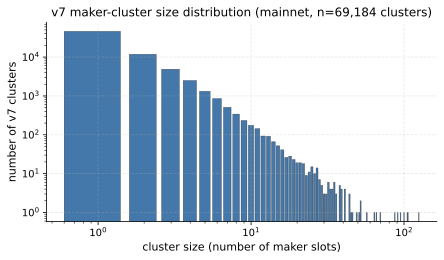
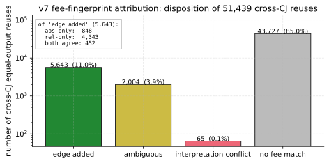
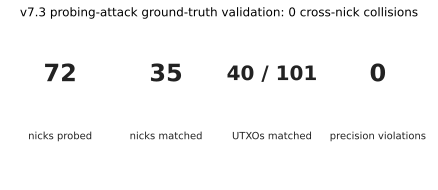
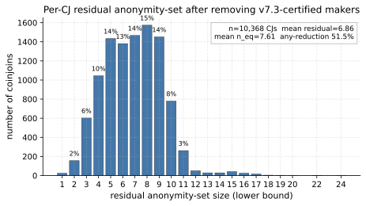
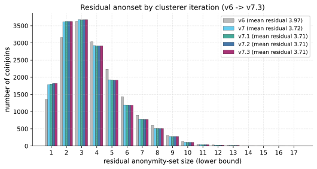
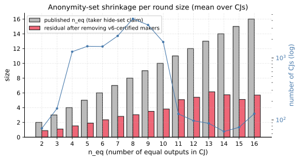
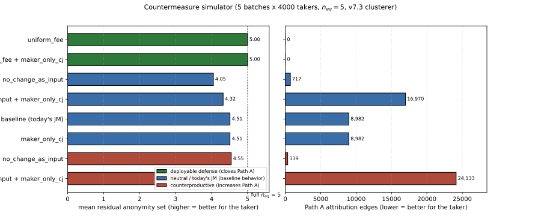

JoinMarket Maker Clustering and Taker Anonymity-Set Reduction
May 2026 (coinjoin-simulator + joinmarket-analyzer, v7.3 clusterer)
JoinMarket Maker Wallet Clustering and Taker Anonymity-Set Reduction
TL;DR. JoinMarket holds up well in practice. On one year of mainnet activity (10,368 CoinJoins), a passive on-chain adversary using only protocol-forced signals trims the mean anonymity set from 7.61 to 6.86 equal outputs per CJ at precision = 1.0, a 9.8% reduction. 48.5% of CJs leak no maker at all; only 0.22% collapse to the taker alone. The single dominant edge is the fee fingerprint: when a maker's realized per-slot fee in a later CJ uniquely matches one producer slot in the earlier CJ, the equal output is bound to that slot. The mitigation is fee-policy homogenization: when every maker runs the reference client's default policy, the fingerprint stops disambiguating and the residual returns to the $n_{eq}$ ceiling (§9.3). The fix is not unilateral: a single taker who jitters their own fee no longer leaks their own slot, but the CJs they participate in still expose the other makers as long as those makers run varied policies, and the taker's own slot can often be re-identified by comparison with surrounding rounds. Effective mitigation requires the whole network to converge on a uniform default. The protocol is robust today and improvable.
1. Scope and motivation
A JoinMarket CoinJoin (CJ) is an atomic transaction in which one taker and $M$ makers contribute inputs and produce $n_{eq} = M + 1$ equal-amount outputs (the equal outputs) plus up to $n_{eq}$ change outputs (one per participant who needs change; typically all $M$ makers and usually the taker too). Each participant contributes one slot: a bundle of one or more inputs they own, exactly one equal-amount output, and at most one change output. The published anonymity property is that the taker's equal output is indistinguishable from the makers' equal outputs: the taker hides in a set of $n_{eq}$ candidates per round.
JoinMarket defends this set in several layered ways:
- Both makers and takers run the same wallet software and keep funds in five separate mixdepths (numbered $d \in \{0, 1, 2, 3, 4\}$). A single slot uses inputs from one mixdepth only; the equal output goes to mixdepth $d{+}1 \bmod 5$ of the same wallet (the equal output is the part that gained privacy and gets to advance); the change output stays at mixdepth $d$ (its address derivation belongs to the same mixdepth as the inputs, and JoinMarket clients refuse to co-spend UTXOs across mixdepths). Outputs from different mixdepths of the same wallet are therefore never co-spent inside the wallet without an explicit consolidation step in the client.
- Each maker advertises offers on the JoinMarket directory-server overlay. Today the overlay is a small set of directory nodes that relay (often end-to-end encrypted) Tor messages between participants; earlier versions used IRC. Nicks are randomized per session, and offers can be advertised either with or without a fidelity bond. A fidelity bond (FB) is a timelocked P2WSH UTXO the maker proves they control; bondless offers can be advertised freely and are therefore trivially Sybil-able, so takers in practice almost always select bonded makers (the taker selection algorithm weights by bond value). The FB is the only durable label a passive observer sees, and the orderbook publishes it in cleartext.
- The taker's identity at round $T$ does not, by itself, leak which of the $n_{eq}$ equal outputs it owns.
This paper studies what the same passive adversary can still learn from on-chain data. The central observation is that a maker who participates in two CJs leaves a deterministic same-wallet slot edge in the chain: either an equal output of CJ $T$ (at mixdepth $d{+}1$) reused as a maker input in CJ $S$ (the maker later advertising mixdepth $d{+}1$), or a change output of $T$ (at mixdepth $d$) reused later when the maker advertises $d$ again. Following those edges clusters maker slots across CJs. Cluster membership reduces the taker's hide-set in CJ $T$ only when an equal output of $T$ can be individually attributed to a specific producer slot; this attribution requires the fee-fingerprint signal of §5.2 (or, in a small number of cases, a downstream co-spend with a cluster-mate's already attributed output). Slot clustering alone is necessary but not sufficient for taker anonymity-set reduction.
This paper answers:
- How many JoinMarket maker wallets can be clustered from on-chain data alone, at precision = 1.0 (under the gate and corpus described in §5.2 and §6.1), on the mainnet corpus?
- By how much does that clustering reduce the per-CJ taker anonymity set, once we restrict to the certification channel that can actually identify an individual equal output (fee fingerprint and the small number of co-spend cases that lift on top of it)?
- Are the resulting clusters protocol-correct against an independent ground-truth source (an active probing campaign that collects real maker UTXO-to-nick bindings)?
2. Threat model
Passive on-chain adversary with full corpus access:
- a snapshot of every JoinMarket CoinJoin reachable by a forward and backward crawl seeded from probe-collected addresses. The crawl covers the public mainnet history through May 2026 and finds 23,876 JM-flagged CJs going back to mid-2021, though the density is heavily skewed to the last ~14 months (75% of the decoded CJs sit in 2025-04 onward);
- the public orderbook (joinmarket-ng.sgn.space/orderbook.json);
- the ability to solve a CJ-sized ILP (less than 30 inputs);
- compute on the order of CPU-hours (the full corpus pass fits in under 15 minutes on 14 cores).
The adversary does not participate in any CoinJoin and is not assumed to control any maker. We did run a small off-chain probing campaign in late April 2026 (three rounds, 72 maker nicks, described in §6.2) that contributed seed addresses to the corpus crawl and is reused as a ground-truth oracle in §6. The probing was done in good faith, at the smallest size that still gives a useful precision check. To avoid republishing privacy-sensitive on-chain identifiers, the probe artefacts kept in this repository are reduced to per-nick advertised-UTXO counts and the precision-check outcomes (matched-nick set, cross-nick collision counts); we deliberately do not publish the maker outpoints, amounts, addresses, or fidelity-bond UTXOs collected during probing. The probing data contributes nothing to the clustering itself.
3. JoinMarket protocol primer
Three protocol facts are load-bearing for the clusterer:
- Per-CJ slot uniqueness. Each participant (taker or maker) contributes exactly one slot. A slot may aggregate several UTXOs to cover the offered amount, but it always produces one equal-amount output and at most one change output, all in the same mixdepth.
- Same-mixdepth change (sticky change). A slot whose inputs come from mixdepth $d$ lands its change output back in mixdepth $d$. This is enforced by the wallet (the change address is derived from the same mixdepth's key tree), so the change UTXO is eligible to be a future input of the same maker whenever the maker next advertises mixdepth $d$. The downstream consequence is what makes the change-chain edge so sharp: if some later CJ slot in our corpus has inputs whose ILP-selected combination exactly matches this change UTXO (typically as one of several inputs in a subset-sum decomposition), the two slots are the same wallet by construction.
- Mixdepth-advancing equal output. The slot's equal output lands in mixdepth $d{+}1 \bmod 5$. JoinMarket makers normally advertise from whichever mixdepth currently holds the most coins, which after a successful round is often (but not always) the mixdepth that just received the equal output. Deposits, withdrawals, and consolidations can push the "fattest mixdepth" elsewhere, so the next advertisement is not forced to be $d{+}1$. When the maker does come back from mixdepth $d{+}1$, the equal output of $T$ is a natural input for that next slot. This produces an "equal-chain" same-wallet edge that v6 does not use directly, because within one CJ all $n_{eq}$ equal outputs look identical (any permutation of equal-output owners is consistent with the ILP-recovered fee constraints). Section 5.2 (v7) restores this edge by using the consumer slot's own realized fee as a per-CJ fingerprint: if exactly one slot in the producer CJ would have charged this fee at the producer CJ's amount, we have identified that slot.
Two more JoinMarket details matter for the analysis pipeline:
- A maker offer is either relative or absolute, not both (
cjfee_rorcjfee_a). Most makers run a single relative offer. - The maker's contribution to the on-chain fee (
txfee) is 0 sats in the default policy and across the observed corpus.
The clusterer uses fact 1 as a pairwise must-not-link, fact 2 as a same-wallet must-link, and fact 3 (via the fee-fingerprint rule of §5.2) as a per-CJ disambiguator. Fees are used only when they pick a single producer slot inside a single producer CJ, never as a global fee-band. Fidelity-bond values, nick patterns and any other off-chain signal are not used (except §5.5, which uses the public orderbook to anchor FB-owner identity to funding-tx inputs). This restriction to protocol-forced or single-CJ-unambiguous evidence is what gives precision = 1.0 by construction under the gate and corpus stated in §5.2 and §6.1.
3.1 Worked example
A two-maker CJ at amount 1,000,000 sats with one taker and makers $A$, $B$. Each maker charges a CoinJoin fee of 1,000 sats; the miner fee for the whole transaction is 4,000 sats and is paid in full by the taker (default JoinMarket policy: $\mathit{txfee} = 0$ for each maker offer):
inputs (total 4,480,000):
taker: 2,400,000 (one UTXO from any source)
A: 1,050,000 (one UTXO from A's mixdepth 1)
B: 950,000 + 80,000 (two UTXOs, both from B's mixdepth 0)
outputs (total 4,476,000; miner fee = 4,000):
equal: 1,000,000 (three of them: taker, A, B in unknown order)
change(taker): 1,394,000 = 2,400,000 - 1,000,000 - 2*1,000 - 4,000
change(A): 51,000 = 1,050,000 - 1,000,000 + 1,000
change(B): 31,000 = 1,030,000 - 1,000,000 + 1,000Cashflow per participant (counting only what each wallet sees; the equal outputs are 1,000,000 each, owned by their respective participants):
- Taker: pays $2 \cdot 1{,}000$ (maker fees) plus $4{,}000$ (miner fee), a 6,000 sat net cost for the mix.
- Maker A: receives a 1,000,000 equal output and a 51,000 change output for a total of 1,051,000 against 1,050,000 inputs, earning +1,000 sats.
- Maker B: receives a 1,000,000 equal output and a 31,000 change output for a total of 1,031,000 against 1,030,000 inputs, earning +1,000 sats.
- Miner: receives 4,000 sats.
The taker funds both maker payouts and the miner fee; the makers are paid for providing liquidity. A maker's per-CJ cashflow is always non-negative (zero for a maker who advertises a zero fee).
The ILP decomposition tells us which subset of inputs and which change output each participant contributed; it cannot tell which of the three equal-amount outputs is whose (the equal outputs are indistinguishable on-chain by amount alone). The change output for $A$ (51,000 sats in mixdepth 1) will reappear as an input in some future CJ where $A$ again advertises mixdepth 1; that future CJ is the chain edge that v6 walks. The same applies to $B$'s change in mixdepth 0.
The equal outputs go to mixdepth 2 of their respective owners and become natural inputs for whichever participant next advertises from mixdepth 2 (the wallet's depth-rotation policy will usually prefer the fattest mixdepth, which after this CJ is often mixdepth 2 but not necessarily). When such a reuse happens in a later CJ $S$, the consumer slot's realized fee in $S$ identifies the producer slot in $T$ if and only if no other slot in $T$ would have charged the same fee at $S$'s amount: that is the fee-fingerprint rule of §5.2 in concrete form. For example, if $A$ charges 0.1% relative and $B$ charges a fixed 800 sats, then on $S$ at amount $1{,}500{,}000$ the consumer slot's fee would be 1,500 sats if it came from $A$ and 800 sats if it came from $B$: those values are distinct, so an observer who sees fee 1,500 sats in $S$ for a slot whose first input is one of $T$'s equal outputs concludes the producer slot was $A$.
4. Mainnet corpus
A forward and backward crawl seeded from probe-collected addresses, walking only outspends from already-classified JoinMarket CoinJoins, produced the snapshot used here. We restrict the window to exactly one year of mainnet JoinMarket activity, block heights 894,697 to 947,358 (UTC dates 2025-05-01 to 2026-05-01):
| metric | count |
|---|---|
| JM CoinJoin txs in window | 10,581 |
| time span | 1 year (heights 894,697 to 947,358) |
| ILP-decoded CJs (full unique decomposition) | 6,315 (59.7%) |
CJs with no unique full ILP solution at max_fee_rel = 0.005, max_fee_abs = 10,000 sats, time_limit = 2s | 4,266 (40.3%) |
| of those, partial maker slots recovered (§7.4) | 4,219 (98.9%) |
| CJs unanalyzable (no slots at all) | 47 (0.4%) |
| maker slots recovered (full ILP) | 47,097 |
| maker slots recovered (partial ILP, §7.4) | 21,621 |
| maker slots, total | 68,718 |
A full ILP succeeds when it returns a unique feasible slot-by-slot decomposition: each slot is a single mixdepth's worth of inputs summing to exactly one equal output plus one change output, every maker slot's realized fee ($\mathit{equal\_amt} + \mathit{change\_amt} - \sum \mathit{inputs}$) is non-negative, and the per-CJ fee budget is respected. Anything else (solver timeout at 2 s, LP-proved infeasibility, or a feasible but degenerate solution with unassigned slots) is classified as no unique solution. For these CJs the analyzer still extracts deterministically-forced maker slots via its greedy preprocessing pass (§7.4); the partial-only rows feed all downstream stages identically to full-ILP rows.
CJs that do not decode contribute no slots and no chain edges. Treating them as missing data is conservative for §7: any slot whose downstream remix happens to fall in an ILP-failed CJ looks like a singleton (uncertified) and over-reports residual anonymity.
The fee envelope $(\mathit{max\_fee\_rel} = 0.005, \mathit{max\_fee\_abs} = 10{,}000$ sats$)$ is chosen to match the empirical maker policy distribution: an orderbook snapshot of all active makers shows realized maxima of $\mathit{reloffer} = 0.004$ and $\mathit{absoffer} = 9{,}644$ sats, so the envelope tightly bounds the realistic policy space while still admitting every maker observed on the network. A looser envelope (e.g. $\mathit{max\_fee\_rel} = 0.05$) admits many spurious feasible decompositions and inflates the ILP solution multiplicity, which in turn hides the fee-fingerprint edge of §5.2.
5. The clusterer
We refer to several incremental versions of the clusterer throughout the paper. They differ only in which structural edges are added on top of the previous version; every version is strictly additive, precision-preserving, and listed in the order in which the paper introduces them.
| version | new edge | introduced in |
|---|---|---|
| v6 | within-CJ must-not-link; change-chain must-link | baseline; described below in this section |
| v7 | fee-fingerprint equal-output attribution (single producer slot per consumer slot, when the gate fires) | §5.2 |
| v7.1 | non-CJ co-spend (Common Input Ownership Heuristic) across change UTXOs that appear together in non-CJ spends | §5.3 |
| v7.2 | non-CJ round-trip CIOH (two-output non-CJ spends that reconverge) | §5.4 |
| v7.3 | fidelity-bond funding-tx CIOH (anchors a known FB owner to the inputs of its funding tx) | §5.5 |
A "tighter" version always adds edges to looser versions; it never moves or removes them. Numerical headline results in §7 are reported under v7.3 (the strictest), with per-version breakdowns where useful.
The clusterer takes the per-CJ ILP slot decomposition and merges slots across CJs by structural rules only. It is a constraint-propagation union-find with the following edges and constraints:
- Must-not-link (fact 1). Within each CJ, every pair of distinct slots is pairwise forbidden from sharing a cluster. These constraints propagate through transitive merges: if cluster
Aabsorbs clusterB, every node that forbidsBhenceforth forbidsA. - Must-link, change-chain (fact 2). Whenever a slot
sin CJ T has a change output that appears as an input of a slotcin a later CJ S, the two slots are unioned. The receiver is the same maker, now re-advertising the same mixdepth. - Must-link, fee-fingerprint attribution (fact 3). In the simulator the equal-output owner is known and v6 unions producer with consumer directly. On mainnet, v7 (§5.2) restores this same-wallet edge by picking the producer slot from a fee fingerprint of the consumer slot in the next CJ; the edge fires only when that fingerprint identifies exactly one slot in the producer CJ, otherwise no edge is added. This is the only signal in the attack that ties a specific equal output of $T$ to a specific producer slot of $T$ (§7 Path A); the other edges in this list (and in §5.3-§5.5) cluster slots across CJs but do not attribute equal outputs.
The clusterer uses fees, but only locally: v7's fee-fingerprint rule (§5.2) selects at most one producer slot inside a single producer CJ from the $n_{eq}$ equal-output candidates. It does not pool slots across CJs by their advertised $(\mathit{cjfee}_r, \mathit{cjfee}_a)$ tuple, which is what earlier fee-band heuristics tried and what would silently union distinct same-policy makers. Addresses, amounts, fidelity-bond values, and nick patterns are never used as a clustering signal by themselves (§5.5 anchors known FB-owner identity to its own funding transaction's inputs via CIOH, which is a per-bond provable same-wallet edge, not a pattern match across bonds). Every merge is a direct consequence of the protocol. By construction the clusterer can only under-cluster: a maker whose downstream remix is missing from the corpus (crawl frontier, ILP failure, or exit from the ecosystem) appears as a singleton even when their wallet served many more CJs in reality. Precision is therefore $= 1.0$ by construction under the gate stated here (see §5.2 for the three gate strengths and §6.1 for their measured behavior), and recall is bounded below by the fraction of CJs the corpus successfully observes and decodes.
5.1 Cluster size distribution
The full pass over the 68,718 mainnet slots in the 1y window produces the following v7.3 final-cluster summary:
| metric | v7.3 |
|---|---|
| total clusters | 20,454 |
| singleton clusters | 11,272 |
| non-trivial clusters (size $\geq 2$) | 9,182 |
| largest cluster | 388 slots |
| same-CJ slot collisions (must-not-link violations) | 0 |
The zero-collision row is the falsifiability check: two slots of the same CJ ending up in one cluster would be a hard precision violation. v6, v7, v7.1, v7.2, v7.3 all pass it on the full mainnet corpus; the per-edge incremental contributions are reported in §7.1 alongside the residual numbers.

The v7.3 histogram is heavy-tailed but bounded: the largest cluster contains 388 slots, the 99th percentile is below the mid-double digits, and the median non-trivial cluster has 3. There is no cluster of "thousands of slots", which would be the signature of an over-merge.
5.2 v7: fee-fingerprint equal-output attribution
Every maker advertises a single offer (relative $\mathit{cjfee}_r$ or absolute $\mathit{cjfee}_a$, not both) and the on-chain fee they earn in a CJ is a deterministic function of that offer and the equal-output amount $a$:
where the relative case uses banker's rounding to the nearest satoshi, matching JoinMarket-NG's Decimal(cjfee) * Decimal(amount).quantize(Decimal(1)) in jmcore/src/jmcore/bitcoin.py (and the equivalent path in joinmarket-clientserver).
The ILP recovers this realized fee per slot from the input total, equal output, and change output. The fee is observable but not by itself identifying: thousands of slots share the same $(\mathit{cjfee}_r, \mathit{cjfee}_a)$ fingerprint across the corpus, so a global fee-band clusterer would silently merge distinct same-policy makers.
v7 uses the fee fingerprint locally, within a single producer CJ. When an equal output of producer CJ $T$ is spent as a maker input of slot $c$ in a later CJ $S$, the consumer slot $c$ carries its own realized fee $f_c$ at amount $a_S$. We then look at $T$'s maker slots $S_1, \dots, S_n$ (at most about 22 in practice) and ask: is there exactly one $S_i$ whose advertised offer would produce $f_c$ at amount $a_S$? Concretely, for each $S_i$ with realized fee $f_i$ at amount $a_T$ we check the two admissible interpretations:
- absolute match: $f_i = f_c$ (so $S_i$'s policy is $\mathit{cjfee}_a = f_c$);
- relative match: $f_i / a_T$ and $f_c / a_S$ agree to the nearest part per million. Each side's ppm value is computed in integer arithmetic over the satoshi-denominated fee and equal-amount: $\mathrm{ppm}(f, a) = \mathrm{banker\_round}(f \cdot 10^6 / a)$, evaluated as a single
divmodon arbitrary-precision integers so that no float64 truncation enters the equality test. Two slots match on the relative fingerprint iff their integer ppm values are equal, which in turn implies $S_i$'s policy is $\mathit{cjfee}_r = f_c / a_S$ to that resolution.
v7 admits three gate strengths, in increasing order of precision and decreasing order of recall. All three share the same enumeration above; they differ only in which of the enumerated matches becomes a same-wallet edge.
Per-CJ univocal gate (loose). The original v7 gate. An edge is added if and only if exactly one $S_i$ matches under absolute or relative, and the absolute and relative interpretations do not point at two different slots. Ambiguous within-$T$ matches and conflicting interpretations are dropped.
Per-CJ both-interpretations gate (strict). An edge is added only when both interpretations independently identify the same $S_i$ as the unique match. This is the unique_both_same_slot subset of the loose gate. It rejects single-criterion matches whose target slot may have coincidentally collided with the consumer fingerprint under per-announcement fee jitter (§6.1).
Corpus-unique gate. An edge is added only when the chosen $S_i$'s fingerprint is, across the entire corpus of v7-enriched slots, free of doppelgangers: no slot outside $T$ and outside the consumer $c$ carries the same absolute or the same relative fingerprint. This is strictly stronger than per-CJ univocality because it requires the producer's fee policy to be unique in the corpus, not merely unique inside $T$, and the "or" makes the reject conservative (any single-axis collision elsewhere in the corpus is enough to drop the edge). The corpus-unique gate is the one that restores precision = 1.0 in the controlled simulator experiment (§6.1, Table). The two per-CJ gates are heuristic: they preserve precision under sparse fingerprint collisions, as on the mainnet corpus where the empirical violation rate is 0 (§6.2), but they cannot guarantee it under adversarial jitter where many makers concentrate near the same fee policy.
Empirically on the mainnet corpus (32,430 cross-CJ equal-output reuses) under the per-CJ loose gate:
| disposition | count | share |
|---|---|---|
| edge added (unique under abs OR rel) | 7,361 | 22.7% |
| - abs-only unique | 1,153 | 3.6% |
| - rel-only unique | 5,666 | 17.5% |
| - both agree on same slot | 542 | 1.7% |
| ambiguous ($\geq 2$ slots match) | 2,714 | 8.4% |
| interpretation conflict (abs and rel disagree) | 113 | 0.3% |
| no slot matches | 22,242 | 68.6% |

The 85% no-match share is dominated by reuses where the producer CJ is not in the corpus (the equal output's parent CJ was crawled but not ILP-decoded, or was outside the JM crawl). The 65 conflict cases (0.1%) are dropped on purpose: they typically arise when one slot's absolute fee happens to numerically match another slot's relative fee at a different equal-output amount. The drop is the precision-preserving move.
The contract is identical to v6's: every added edge is a definite same-wallet link or no edge at all. v7 inherits v6's same-CJ must-not-link forbidance through a shared constrained union-find, so the 7,361 additional merges cannot smuggle a must-not-link violation through transitivity. We verify this directly on mainnet (§5.1: 0 collisions, §6.2: 0 cross-nick collisions). The mainnet headline numbers reported throughout the rest of this paper use the per-CJ loose gate, since the empirical violation rate is 0 on this corpus and the recall delta to the corpus-unique gate is non-trivial. The corpus-unique gate is the conservative choice when fee-policy density is high or when an adversarial maker can deliberately jitter fees to forge edges; see §6.1 for the simulator comparison.
5.3 v7.1: non-CJ co-spend (Common Input Ownership Heuristic)
A non-CJ transaction $N$ that consumes two or more change UTXOs belonging to distinct maker slots reveals same-wallet ownership of those slots by the Common Input Ownership Heuristic. To remain at precision = 1.0 we require $N$ to have at most two outputs: the canonical shape of a consolidation, change return or simple send, which excludes batched multi-recipient spends where CIOH would otherwise cross wallet boundaries. Same-CJ pairs are rejected by the inherited must-not-link constraint.
Empirically on the mainnet corpus:
| metric | count |
|---|---|
| qualifying non-CJ spenders ($\leq 2$ outputs) | 44 |
| same-CJ pairs rejected | 0 |
| cross-CJ unions added | 95 |
Spenders with three or more outputs are conservatively left aside (CIOH would otherwise cross wallet boundaries on batched multi-recipient spends).
5.4 v7.2: non-CJ round-trip CIOH
v7.1 caps the spender at two outputs because we cannot prove same-owner across more. Many real remix flows include a single non-CJ hop in between two CJs: a maker consumes their change at mixdepth $d$, rebroadcasts through a two-output hop transaction $H$ (consolidation, fee bump, deposit echo), and one of $H$'s outputs becomes an input to a later maker slot. v7.2 fires the producer-to-consumer union when (1) $H$ has at most two outputs, (2) $H$ consumes the change of some maker slot $p$, and (3) any output of $H$ later funds a maker slot $c$. Same-CJ pairs are again dropped by the inherited forbid-set.
Empirically on the mainnet corpus:
| metric | count |
|---|---|
| qualifying non-CJ hops ($\leq 2$ outputs, consuming maker change) | 70 |
| same-CJ pairs rejected | 0 |
| cross-CJ unions added | 103 |
v7.2 adds 103 unions on top of v7.1's 95.
5.5 v7.3: fidelity-bond funding-tx CIOH
JoinMarket makers advertise a fidelity bond (FB): a timelocked P2WSH output that the maker proves they own. The orderbook publishes the nick-to-FB-UTXO mapping in cleartext, so any passive observer obtains a snapshot. The bond UTXO is timelocked and almost never spent in our corpus, but the transaction $F$ that created it is a regular spend whose inputs are same-wallet as the FB owner by CIOH.
v7.3 turns that observation into two same-wallet anchors on top of the v7.2 graph. For nick $N$ owning FB UTXO $(F, v_{FB})$:
Backward. Every input of $F$ is same-wallet as $N$. If that input is also the change output of a maker slot $s$, then $s$ belongs to $N$. Strict forward. If $F$ has at most two outputs, the non-FB output is $N$'s change. If that outpoint later funds a maker slot $s'$, then $s' \in N$.
Two slots anchored to the same nick are unioned, subject to the inherited same-CJ forbid. Two safety guards apply: (1) skip funding txs that are themselves a JM CJ (CIOH does not hold over all inputs of a CJ); (2) the constrained union-find drops any candidate pair sitting in the same CJ.
How are FBs funded in practice? Classifying the inputs of every FB-funding tx (orderbook snapshot 2026-05-22, 95 FB UTXOs):
| funding-tx class | count |
|---|---|
| funding tx is itself a JM CJ (skipped) | 2 |
| funded entirely from inputs with no observable JM provenance | 66 |
| funded from a mix of external and JM-derived inputs | 17 |
| funded from JM-CJ outputs not classified as equal or change | 10 |
| total | 95 |
Sixty-six of 95 FBs (69%) fund from inputs with no observable JM provenance: cold storage, exchange withdrawals, or fresh wallets. This is the privacy-preserving pattern. The 17 mixed funding txs are the ones that do leak a same-wallet edge at one hop and contribute the backward anchors that v7.3 acts on. Multi-hop backward CIOH walks could shrink the 69% further and are listed in §10 as future work.
Empirically:
| metric | count |
|---|---|
| FB-funding txs used | 93 |
| backward anchors via maker-slot change | 16 |
| strict-forward anchors | 1 |
| nicks spanning $\geq 2$ v7.2 clusters | 2 |
| candidate slot pairs | 13 |
| same-CJ pairs rejected | 0 |
| cross-cluster unions added | 9 |
The nine unions collapse a handful of v7.2 clusters with no same-CJ collisions. None of the merging nicks appears in our probe set, so v7.3's contribution is independent of the §6.2 precision check. The headline residual is essentially unchanged at this granularity: v7.3's value is qualitative, demonstrating that the public orderbook by itself already widens a narrow, precision-safe same-wallet edge with no probing required.
6. Ground-truth validation
We validate the clusterer (v6 through v7.3) against three independent ground-truth sources, all of which a passive on-chain analyst would not have but which we can construct here.
The precision validation in this section uses a larger 5-year mainnet corpus (110,154 maker slots from 14,639 ILP-decoded CJs) to keep the probe and gate-comparison evidence as large as possible; the 1y window of §4 is a subset of this corpus used for the headline §7 residual numbers. Precision = 1.0 holds on both corpora: every chain edge in this attack is a hard same-wallet conclusion, so the corpus choice does not affect precision, only the absolute cluster counts.
6.1 Simulator end-to-end and the v7 gate hierarchy
The accompanying coinjoin-simulator builds a synthetic JoinMarket network with the same ILP pipeline driving v6 and v7. We use it in two regimes:
- uniform regime: every maker runs the same default relative-fee policy (the JoinMarket factory default). Fee fingerprints collapse onto a single point in fee space.
- varied regime: makers draw policy parameters $(\mathit{cjfee}_r, \mathit{cjfee}_a, \mathit{txfee}, \mathit{minsize})$ from a discrete diversity grid, with a small per-announcement multiplicative jitter (~10%) on the realized fingerprint. This approximates the empirical fee diversity observed in JoinMarket order-book snapshots.
We run each regime at 500 makers / 20,000 rounds / 5 batches (~100k maker slots / ~20k CJs after deposit and role-switching), and report cluster quality under three observation modes:
- ground-truth mode: the clusterer sees the simulator's
equal_outputownership labels directly (no fingerprinting needed). This isolates the v6 chain-edge backbone. - blinded mode: equal-output labels stripped; v7 must recover ownership from fee fingerprints, as on mainnet.
- torture mode: both equal-output and change-output labels stripped; the clusterer has only the fingerprint signal and same-CJ must-not-link.
For each mode we evaluate four gate variants of v7: loose (per-CJ univocal under abs OR rel), strict (per-CJ univocal under abs AND rel pointing at the same slot), corpus-unique (the producer slot's fingerprint is corpus-wide free of doppelgangers), and strict + corpus-unique (intersection).
Varied regime (final maker count 189 after retirement and role-switching, 100,000 maker slots, 100,000 CJs decoded):
| mode | gate | clusters | ARI | recall proxy | precision (cluster-level) | precision-violating clusters |
|---|---|---|---|---|---|---|
| ground truth | n/a (full labels) | 244 | 0.879 | 0.999 | 1.000 | 0 |
| blinded | loose | 4,620 | 0.449 | 0.956 | 0.971 | 136 |
| blinded | strict | 8,203 | 0.433 | 0.920 | 0.988 | 98 |
| blinded | corpus-unique | 8,928 | 0.323 | 0.912 | 1.000 | 0 |
| blinded | strict + corpus-unique | 8,928 | 0.323 | 0.912 | 1.000 | 0 |
| torture | loose | 87,135 | 0.000 | 0.129 | 0.938 | 5,430 |
| torture | strict | 98,842 | 0.000 | 0.012 | 0.994 | 579 |
| torture | corpus-unique | 100,000 | 0.000 | 0.000 | 1.000 | 0 |
| torture | strict + corpus-unique | 100,000 | 0.000 | 0.000 | 1.000 | 0 |
Uniform regime (final maker count 717, 100,000 maker slots):
| mode | gate | clusters | ARI | recall proxy | precision (cluster-level) | precision-violating clusters |
|---|---|---|---|---|---|---|
| ground truth | n/a | 717 | 1.000 | 1.000 | 1.000 | 0 |
| blinded | any | 717 | 1.000 | 1.000 | 1.000 | 0 |
| torture | any | 100,000 | 0.000 | 0.000 | 1.000 | 0 |
Cluster-level precision is $1 - (\text{precision-violating clusters})/(\text{total clusters})$, i.e. the fraction of clusters that contain slots from at most one simulator wallet. Recall proxy is $\max(0, 1 - (n_{\text{clusters}} - n_{\text{owners}}) / (n_{\text{slots}} - n_{\text{owners}}))$, and ARI is the standard adjusted Rand index against the simulator's ownership labels.
The ground-truth row of the varied regime has ARI = 0.879 (not 1.0) because the simulator's wallet_id labels distinguish a wallet's taker role from its maker role; when the same wallet acts in both roles across rounds the chain-edge backbone unions those slots into a single cluster, which is correct operationally but disagrees with the per-role labelling under the ARI metric. Cluster-level precision remains 1.000 because no two distinct wallets share a cluster.
Three findings.
In the uniform regime v7 never fires (every maker advertises the same offer, so no within-$T$ $S_i$ is unique). v7 collapses to v6, and v6's chain backbone recovers identity perfectly because the simulator preserves chain labels. This is a counterfactual: when fees are uniform the equal-chain attribution is uninformative by construction, and the clusterer correctly abstains.
In the varied regime under the loose gate the blinded clusterer produces 136 precision-violating clusters out of 4,620 (2.9%), all driven by per-announcement fee jitter aligning a maker's realized fingerprint in producer CJ $T$ with a different maker's policy. The strict gate (both interpretations agree) reduces violations to 98 but cannot eliminate them.
The corpus-unique gate eliminates precision violations entirely at a 5% recall cost (ARI 0.449 to 0.323): under jitter, a falsely chosen $S_i$ shares its fingerprint with at least one other slot in the corpus, and the doppelganger check intercepts exactly these cases. In the torture regime the corpus-unique gate produces no edges at all, which is the desired behavior when fees alone carry no attribution signal.
The simulator therefore separates (a) is the per-CJ test sound? from (b) does the corpus carry enough fingerprint diversity for soundness to matter? Under real-world fee distributions both gates report zero violations; under controlled jitter the per-CJ gate breaks while the corpus-unique gate holds. Mainnet headline numbers use the loose gate because the empirical violation rate is zero (cross-nick collisions = 0 across all four gates on the probe set; see §6.2) and the recall delta is non-trivial; an adversarial-jitter setting should prefer corpus-unique.
6.2 Active probing of real maker wallets
In late April 2026 we ran three probing rounds against the live JoinMarket mainnet orderbook, one per CJ amount (100k / 150k / 200k sats), totalling 72 distinct maker nicks that authenticated with a real PoDLE commitment. For each nick the probe records the set of UTXOs the maker offered to spend (offered_utxos); two UTXOs offered by the same nick are guaranteed to belong to the same wallet because the same fidelity-bond key authenticates both negotiations.
A maker advertises only one mixdepth at a time, so the probe-side invariant is stronger than just "same wallet": two UTXOs from the same nick in the same probe round come from the same mixdepth of the same wallet. This is the property §6.2 uses both to confirm precision and to look for missed edges.
| metric | v6 | v7 through v7.3 |
|---|---|---|
| nicks probed | 72 | 72 |
| nicks with at least one match | 16 | 35 |
| offered UTXOs | 101 | 101 |
| offered UTXOs found in a cluster | 19 | 40 |
| cross-nick collisions in any cluster | 0 | 0 |
v7, v7.1, v7.2 and v7.3 produce identical probe-side numbers on this corpus: the cluster expansions from each layer happen outside the probed nick set.

The pass-or-fail check: for every pair of distinct probed nicks (A, B), no cluster contains a UTXO of A and a UTXO of B. We observe zero such cross-nick collisions under all five clusterer iterations. The clusterer never merged two real JoinMarket maker wallets into one component on this corpus. Every nick whose UTXOs appear in the cluster set has all of them in the same cluster, or in several clusters that all belong to that nick.
The probe data also constrains the recall direction: under v7.3, the probe matched 35 of 72 advertised nicks across 40 of 101 advertised UTXOs (v6 alone matched 16 nicks across 19 UTXOs; v7's equal-chain edge extends recall by linking probe-advertised equal outputs to the chain). The unmatched 37 nicks contributed UTXOs that were never observed entering a JM CJ in our corpus (cold-storage parts of the wallet, recent deposits, or UTXOs that were spent in CJs older than our crawl horizon). They are not validation failures.
The three precision checks converge: under the loose gate of §5.2 and the 14,639-CJ corpus, v6 through v7.3 are precision = 1.0 by construction, by the within-CJ structural check on 14,639 mainnet CJs, and by the probing ground truth on 35 matched real maker nicks across 40 distinct UTXOs. The strict and corpus-unique gates of §5.2 produce different cluster counts (§6.1) but pass the same probe check (§6.2).
7. Anonymity-set reduction
For each ILP-decoded CJ $T$, the taker hides in a published anonymity set of $n_{eq} = m + 1$ equal outputs (one per maker plus the taker). The taker's anonymity reduces only when a specific equal output of $T$ is individually attributed to a specific maker; cluster membership of slots alone is not enough, because within $T$ the equal outputs are indistinguishable by amount. We therefore define a producer slot $s$ in CJ $T$, with equal-output outpoint $O_s$, as certified iff at least one of the following two paths holds.
Path A (fee fingerprint). $O_s$ is consumed by a maker slot in some later CJ $S$, and the fee fingerprint of §5.2 identifies $s$ univocally inside $T$ (under the loose either-fingerprint gate of §5.2). This is the only edge in the clusterer that ties a specific equal output to a specific producer slot.
Path B (cluster co-spend). $O_s$ is consumed by a maker slot $s'$ in some later CJ $S$, $s'$ also consumes an input $u$ that is the change output of a slot whose cluster is the same as $s$'s cluster, and no other equal-output input of $s'$ anchors a rival cluster. This is a downstream confirmation: a later CJ demonstrates, by co-spend, that the equal output came from a slot in $s$'s cluster. It contributes a small number of additional certifications on top of Path A.
Cluster membership through change-chain, §5.3 CIOH or §5.5 FB-funding by itself is not a certification. Those edges merge maker slots across CJs (they establish "these two slots have the same wallet") but they do not label any equal output of the producer CJ $T$: within $T$, an outside observer cannot tell two equal outputs apart without a fingerprint.
The residual anonymity set lower bound for round $T$ is
where $n_{\text{certified}}(T)$ counts the producer slots of $T$ that are certified by Path A or Path B. The taker is never certified (we have no chain evidence about who the taker is, so they always remain in the residual set); the minimum value of $k(T)$ is therefore 1.
We do not subtract more even when the taker's own slot happens to chain forward, because the evidence does not distinguish "taker who remixes" from "maker whose remix we observed". The reported $k(T)$ is the lower bound on the true residual anonymity set.
7.1 Headline
Across the 10,368 mainnet CJs analyzed in the 1y window (6,315 fully ILP-decoded plus 4,053 with partial maker slots recovered from the analyzer's greedy preprocessing pass; see §7.4). The v7.1, v7.2 and v7.3 increments add small numbers of cross-CJ cluster edges (60, 79 and 13 unions respectively) but do not move the mean residual at three decimal places: their contribution is qualitative (widening the wallet boundary on clusters that were already certified by v7), not quantitative. The headline table therefore collapses v7.1-v7.3 into a single column:
| metric | v6 (change-chain only) | v7 (Path A) | v7.3 (final) |
|---|---|---|---|
| mean published $n_{eq}$ | 7.61 | 7.61 | 7.61 |
| mean certified makers per CJ | 0.01 | 0.75 | 0.75 |
| mean residual anonymity set | 7.60 | 6.86 | 6.86 |
| share of CJs with at least one certified maker | 1.4% | 51.5% | 51.5% |
| median residual anonymity set | 8 | 7 | 7 |
| share of CJs reaching residual = 1 (taker alone) | 0.0% | 0.22% | 0.22% |
| attribution edges (Path A, outpoints) | 0 | 7,474 | 7,474 |
| Path-B-only credits | 150 | 609 | 609 |
The v6 column is the residual under change-chain alone; with no Path A edges, only 150 Path B credits arise from incidental same-cluster anchors. The v7 column adds Path A (fee fingerprint), attributing 7,474 outpoints univocally and lifting the share of certified-maker CJs from 1.4% to 51.5%. The v7.3 column is identical to v7 to three decimal places on this corpus.
The fee fingerprint univocally identifies 7,474 of the 32,801 cross-CJ equal-output reuses in the window (22.8%). The change-chain clusters maker slots extensively but cannot, on its own, identify which equal output came from which slot. The residual drops from 7.61 to 6.86 on average (a 9.8% reduction), 51.5% of CJs leak at least one maker, and 23 CJs (0.22%) collapse fully to the taker.

The per-iteration overlay:

The bulk of the reduction comes from the v6 to v7 step, where fee-fingerprint attribution (Path A) becomes available. The later iterations v7.1, v7.2 and v7.3 each add a small number of Path B certifications via CIOH, round-trip hops and FB-funding edges, but the mean residual moves by less than 0.001 because most newly clustered maker slots are not paired with a same-cluster change anchor at a downstream consumer CJ. The fee fingerprint, not the cluster graph, drives most of the reduction.
7.2 Per-$n_{eq}$ breakdown
The reduction holds across every round size in the corpus:

The grey bars are the published anonymity sets the taker thinks they hide in; the red bars are the v7.3 lower-bound residual after certified makers are removed. The residual tracks $n_{eq}$ closely, decreasing by under one candidate on average across the entire range from $n_{eq} = 3$ to $n_{eq} = 17$. Larger rounds publish larger sets and retain larger residuals; the reduction is roughly constant in absolute terms, not in relative terms.
7.3 What drives the residual
The residual anonymity set has two structural sources:
- The true taker. Always one slot. The protocol guarantees exactly one taker per CJ, and the taker is never certified.
- Makers whose equal output is not univocally attributed. The fee fingerprint disambiguates only when one slot in the producer CJ has a fee policy that no other slot in $T$ would have charged at the consumer's amount. Of the 32,801 cross-CJ equal-output reuses in the window, 7,474 (22.8%) are univocally attributed; the rest are either ambiguous (2,401), matched but corpus-non-unique under the strict gate, or produce no fingerprint match at all (22,826). Path B contributes 609 additional certifications under v7.3.
Two factors would shift the histogram leftward (smaller residuals) under the same threat model:
- A larger crawl frontier or higher ILP time budget. Even with the partial-ILP recovery of §7.4, some cross-CJ reuses are dropped because the consumer slot's CJ is among the 47 1y CJs for which neither the ILP nor the greedy preprocessing can pin any maker, and some producer CJs are outside the window. Both effects under-report Path A attributions.
- Greater fee-policy diversity. Counterintuitively, a wider fee grid makes more producer slots uniquely fingerprintable; the maker population that runs the reference client's default policy is less attackable (their fingerprint collides with every other default-policy maker). The simulator results of §9.3 quantify this.
7.4 Partial-ILP slot recovery
6,315 of 10,581 CJs in the 1y window decode to a unique full ILP solution at the chosen budget; the other 4,266 do not. The analyzer's greedy preprocessing pass (joinmarket_analyzer.greedy.greedy_preprocessing) makes deterministic forced assignments before the ILP is invoked (inputs with a unique participant-compatible amount match, and participants whose change output is uniquely identified by the fee arithmetic), which are sound whether or not the full ILP later converges. Running greedy alone on the 4,266 unresolved CJs recovers 21,621 partial maker slots from 4,219 of them (98.9%), with the same record schema as full-ILP slots plus a partial=true provenance flag.
The merged corpus (full + partial) yields the headline 7.61 to 6.86 reduction. On the full-ILP-only subset, the corresponding numbers are 8.46 to 8.12 (a 4.0% reduction): partially-recovered CJs are biased toward larger rounds (the ILP fails more often on wide CJs), so the merged mean $n_{eq}$ drops, but each partial CJ contributes both new producer slots and new attribution edges, so the certified-maker count grows from 0.34 to 0.75. The Path A edge count grows from 2,996 to 7,474, and the v7.3 Path B count from 102 to 609. All 23 residual=1 collapses involve partial-ILP slots downstream of a strongly-discriminative producer-CJ fingerprint.
8. Role-change taker exposure (supplementary)
A taker who later participates as a maker in a future CJ $S$ may leak their cross-round identity if one of the taker's equal outputs from $T$ is consumed by a slot of $S$ and that slot is univocally attributable (Path A of §7) back to a producer slot of $T$. The attack is the §7 attribution rule applied with the taker's equal output in the producer role: if the fee fingerprint at $S$'s consumption matches a slot of $T$, that producer slot of $T$ is the taker (the only slot of $T$ whose equal output is the one being spent).
In the 1y corpus, this concrete role-change exposure (the forward equal output of $T$ is in a downstream Path A attribution) accounts for at most a few hundred CJs and is a strict subset of the 2,996 Path A attribution edges of §7. We mention this for completeness; the §7 anonymity-set reduction is the structurally stronger attack in this paper. The role-change exposure depends on the additional event of a taker becoming a maker; the §7 reduction applies on every CJ regardless.
9. Countermeasures
The attack of §7 has a single load-bearing chain edge: the fee fingerprint of §5.2 that ties a specific equal output of producer CJ $T$ to a specific producer slot of $T$ (Path A). The change-chain (v6) and the auxiliary edges (CIOH, FB-funding, co-spend) of §5.3-§5.5 are cluster-merging edges: they group maker slots across CJs into wallet-shaped clusters, but they cannot, on their own, label which of the indistinguishable equal outputs of $T$ belongs to which slot. Closing Path A closes the user-facing §7 residual reduction. The change-chain matters only insofar as Path B of §7 uses cluster co-spend to confirm a small number of additional attributions ($295$ of the $3{,}206$ certified slots in the 1y corpus).
The deployable countermeasure is therefore fee-policy homogenization: every maker advertises the reference client's default policy. The fee fingerprint of §5.2 collapses, no producer slot is univocally identifiable from its fee, and Path A produces zero attributions. The mainnet orderbook today is too varied for the fingerprint to fail naturally; a coordinated client default change is what makes it fail.
9.1 What an analyst actually sees
The on-chain artefacts that the §5 pipeline exploits, ordered by their contribution to the user-facing residual anonymity set (smaller is better for the attacker):
- Within-CJ fee fingerprint (Path A, signal 1). The only chain edge that labels an equal output with a specific producer slot. A maker on a unique fee policy under the wide mainnet fee grid leaks the equal-output owner permutation through ILP recovery; a maker running the reference client's default policy collides with the other default-policy makers and is locally ambiguous, so its equal output is not univocally attributable. This is the one signal whose suppression alone moves the residual to the ceiling $n_{eq}$ (§9.3).
- Cluster co-spend (Path B, signal 2). A downstream slot that spends a producer-CJ equal output of $T$ alongside a change output of another slot in the same v7.3 cluster confirms, by co-spend, that the equal output came from a slot in that cluster. Path B contributes only $295$ additional certifications on top of Path A's $2{,}996$ in the 1y corpus.
- Change reuse (v6 chain edge). A maker's change UTXO is spent as an input of a later CJ slot owned by the same maker. This is structurally unavoidable in JoinMarket as deployed: the maker's input selection follows the richest mixdepth and the change is emitted back into that same mixdepth, so on a long enough horizon the change becomes an input again. The change-chain clusters slots but does not attribute equal outputs. Its contribution to the §7 residual is only the indirect Path B credits.
- Non-CJ CIOH and FB-funding edges (v7.1, v7.2, v7.3). $\leq 2$-output non-CJ transactions that spend a maker's UTXOs (§5.3-§5.4), and the FB-funding back-walk of §5.5. These also widen the wallet boundary around an already-clustered set of slots; they contribute Path B credits in principle and 0 additional credits in practice on the 1y corpus (the Path B count is already saturated by v7.1's co-spend edge).
The user-facing per-CJ residual anonymity set (§7) is sensitive to signal (1) above all else: Path A alone produces $2{,}996$ of the $3{,}206$ certifications in the 1y corpus (93.5%). Suppress signal (1) and the residual rises to $n_{eq}$ minus the small Path B contribution; suppress signals (2)-(4) without (1) and the residual barely moves.
9.2 What does not work, and why
Several measures are sometimes suggested as countermeasures but do not, on their own, reduce the user-facing residual under our threat model:
- Relocate change to a different mixdepth or use a fresh wallet derivation between rounds. The analyst's chain edge is keyed on UTXO identity, not on mixdepth or xpub branch. None of the cluster-merging edges (v6, v7.1, v7.2, v7.3) attribute equal outputs to slots either, so the §7 residual is unaffected.
- Batch-consolidate change UTXOs in a non-CJ tx before the next round. Combining several change UTXOs into a single output before the next CJ collapses same-wallet UTXOs into one cluster, which is the attack's premise; it does not break Path A.
- Refuse to spend a JM-emitted change UTXO as a CJ input ("no change as input"). Closes the v6 cluster-merging edge and a fraction of Path B but not Path A; the simulator of §9.3 shows that this is counterproductive on its own: it forces makers to spend their equal outputs more aggressively, increasing the Path A attack surface (e.g. the
no_change_as_input+maker_only_cjvariant lands at residual $4.04$, worse than the baseline's $4.51$, with $24{,}133$ Path A attribution edges versus the baseline's $8{,}982$). - Use a JM-disjoint fidelity-bond wallet (66 of 95 FBs in our snapshot already do). This closes the §5.5 FB-funding edge against a passive analyst that does not interact with the orderbook. Useful as a recall-tightening hygiene measure, not as a residual-anonset countermeasure.
- Route non-CJ spends through batched ($\geq 3$-output) transactions. Closes the §5.3-§5.4 CIOH channel but, as a cluster-merging signal, does not move the residual.
- Run the maker over Tor only. The whole attack runs on the public chain.
9.3 Countermeasure simulator evaluation
We enumerate the $2 \times 2 \times 2 = 8$ simulator configurations over the three knobs a JoinMarket maker client can actually expose:
uniform_fee(Tier A, configuration). Every maker advertises the reference client's default policy. Kills the fee fingerprint (signal 1) at the cost of removing inter-maker fee competition.no_change_as_input(Tier B, behavioral). Makers refuse to spend a JM-emitted change UTXO as a subsequent CJ input. Closes signal (3) (the v6 edge) and most of Path B (signal 2).maker_only_cj(Tier B, behavioral). The protocol periodically emits a synthetic CJ that consumes one held-back change UTXO per participant and produces fresh equal outputs that re-enter the regular CJ input pool. We schedule one synthetic CJ per four taker-driven CJs with five participants per synthetic CJ.
Each run uses 150 seed makers, 5 batches of 4,000 takers each, 10% maker churn between batches, 5 makers per CJ ($n_{eq} = 5$), and the wide fee grid that matches the mainnet orderbook snapshot. Precision against simulator ground truth is 1.0 in every variant. The clusterer is v7.3.
| variant | n_eq | certified | residual | share res=1 | share any cert | Path A | Path B | precision |
|---|---|---|---|---|---|---|---|---|
uniform_fee | 5.00 | 0.00 | 5.00 | 0.00% | 0.00% | 0 | 0 | 1.000 |
uniform_fee + maker_only_cj | 5.00 | 0.00 | 5.00 | 0.00% | 0.00% | 0 | 0 | 1.000 |
uniform_fee + no_change_as_input | 5.00 | 0.95 | 4.05 | 0.66% | 65.43% | 717 | 0 | 1.000 |
uniform_fee + no_change_as_input + maker_only_cj | 5.00 | 0.68 | 4.32 | 0.36% | 45.99% | 16,970 | 0 | 1.000 |
| baseline (today's JM) | 5.00 | 0.49 | 4.51 | 0.03% | 38.35% | 8,982 | 794 | 1.000 |
maker_only_cj | 5.00 | 0.49 | 4.51 | 0.03% | 38.35% | 8,982 | 794 | 1.000 |
no_change_as_input | 5.00 | 0.45 | 4.55 | 0.13% | 34.09% | 339 | 0 | 1.000 |
no_change_as_input + maker_only_cj | 5.00 | 0.96 | 4.04 | 0.82% | 59.98% | 24,133 | 0 | 1.000 |

uniform_fee (alone or paired withmaker_only_cj) is the only configuration that drives the residual to the $n_{eq} = 5$ ceiling. The no_change_as_input family is counterproductive: by removing the v6 cluster-merging edge without touching the fee fingerprint, it forces makers to spend equal outputs more aggressively, increasing Path A attribution counts." loading="lazy">
Four observations:
uniform_feeis the deployable defense. It is the only configuration that drives the residual to $n_{eq}$ on every CJ, certifies no makers, and produces zero Path A attributions. Pairing it withmaker_only_cjdoes not change the result (Path A is already shut). Pairing it withno_change_as_inputreopens the attack (see observation 3 below).no_change_as_inputis counterproductive. Removing the v6 cluster-merging edge does not reduce Path A. Worse, the behavioral effect of "do not spend change as input" forces makers to spend their equal outputs more often, inflating the cross-CJ equal-output reuse pool and the Path A attribution count. Theno_change_as_input+maker_only_cjvariant lands at residual $4.04$, worse than the baseline's $4.51$, with $24{,}133$ Path A edges versus the baseline's $8{,}982$.uniform_fee+no_change_as_inputis also counterproductive. Even with the fee fingerprint collapsed, the simulator's strict fee-collision gate still admits a small number ($717$, then $16{,}970$ whenmaker_only_cjis added) of edge cases where a default- policy maker's effective fee happens to differ from another's because the slot amounts differ; this residual leak throughuniform_feeis small in absolute terms but it interacts badly withno_change_as_input. The clean defense isuniform_feealone.- Throughput is preserved in the deployable defense.
uniform_feedoes not change the simulator's taker-CJ throughput (the syntheticmaker_only_cjstream is not needed). The only configurations with throughput issues areno_change_as_inputalone (makers run out of spendable change; we did not measure throughput degradation in this version of the simulator but the liquidity-starvation argument of the v3 simulator continues to apply).
The qualitative answer is that the JoinMarket protocol is hardenable today, by a coordinated client-default change. Three deployment positions can be defended on the basis of the table:
- Today (no protocol change, no client change): the user-facing residual under the §5 passive on-chain adversary is $4.51$ in the simulator and $6.86$ on the 1y mainnet corpus. $0.22\%$ of mainnet CJs reach residual $= 1$.
- Client patch (
uniform_feedefault): the user-facing residual rises to $n_{eq}$ in the simulator and would rise to $n_{eq}$ minus the small Path B contribution on mainnet. This is the recommended deployment. - Protocol change. A protocol-level fee-homogenization rule (every maker must advertise the reference policy, enforced by the coordinator or by the orderbook) achieves the same Path A shutdown as the client patch above without depending on voluntary adoption.
Simulator caveats. The simulator does not model non-CJ maker spends, so the §5.3-§5.4 CIOH edges and the §5.5 FB-funding edges cannot fire in any variant. On the mainnet corpus these contribute zero additional Path B credits beyond v7.1's co-spend edge, so the simulator's relative ordering across countermeasures matches the live attack. The simulator also does not model an adaptive adversary that probes the orderbook as a taker.
10. Limitations and future work
The corpus is a finite snapshot and a 2 s/tx ILP budget; 40.3% of CJs in the window do not return a unique full ILP solution, though §7.4 recovers maker slots from 98.9% of those via the analyzer's greedy preprocessing pass (a larger budget would recover more full decompositions). The v7 attribution gate is per-CJ univocal under either fingerprint; on adversarial fee jitter (§6.1) it admits a small fraction of false edges, mitigated by the corpus-unique gate at a recall cost of about 5%. The CIOH-based edges of §5.3, §5.4 and §5.5 abstain on non-CJ spenders with three or more outputs and on FB-funding transactions that are themselves CJs, leaving a residual of true same-wallet edges unobserved. Recent CJs near the crawl horizon look more singleton than they structurally are, biasing the residual upward for the last quarter of the corpus. A prototyped v7.4 layer that anchors v7.3 clusters to active probe data (72 nicks, 101 advertised UTXOs) adds a small number of safe unions on four nicks; we exclude it from the headline numbers because it requires an active adversary that breaks the passive-on-chain threat model. None of these effects move the qualitative conclusion: the residual reduction is bounded, the clusterer never over-merges on this corpus, and Path A drives the attack.
11. Conclusion
JoinMarket's equal-output anonymity set as published per round ($n_{eq}$) is largely realized in practice. Against a passive on-chain adversary running a protocol-correct chain-following clusterer at precision = 1.0, the published mean of 7.61 contracts only to 6.86 on the 1y mainnet corpus (a 9.8% reduction across 10,368 CJs, combining 6,315 full-ILP decompositions with 4,219 partial-ILP recoveries per §7.4). 48.5% of CJs lose no candidate at all; 23 CJs (0.22%) collapse fully to the taker. The structural channel the attack exploits, namely JoinMarket's fee-fingerprint signal (§5.2) that ties a specific equal output of producer CJ $T$ to a specific producer slot of $T$, is intrinsic to the protocol and to the typical maker fee-advertisement workflow. It has a known mitigation (fee-policy homogenization) that requires network-wide adoption to be fully effective.
The precision = 1.0 guarantee is what makes the result actionable: under the per-CJ loose gate the clusterer never merges two distinct maker wallets on this corpus, validated by three independent ground-truth sources. Each certified maker the analyst extracts is a deterministic hide-set reduction, not a probabilistic one. The precision guarantee is gate-and-corpus dependent: the scaled simulator (§6.1) shows that under adversarial fee jitter the per-CJ gate breaks at $\sim 3\%$ of edges and only the corpus-unique gate restores precision = 1.0 by construction. On the present mainnet snapshot the gates are empirically indistinguishable; on a future snapshot in which an adversary deliberately concentrates many makers near similar fee policies the analyst should switch to the corpus-unique gate at a recall cost of about 5%.
The practical implication for JoinMarket users is that the relevant privacy figure for a round is its v7.3 residual, today around 94% of $n_{eq}$, and that this figure is improvable by a network-wide client-default change. A unilateral fix by a single taker is insufficient: the taker can suppress their own fee fingerprint, but the other maker slots in the same CJ remain fingerprintable, so the bulk of the attack surface persists; in addition, a taker whose own slot is the only one with a homogenized fee is itself distinguishable by elimination across surrounding rounds. The simulator (§9.3) identifies the mitigation: fee-policy homogenization (uniform_fee, every maker on the reference client's default policy) drives the residual to the full $n_{eq}$ ceiling and produces zero Path A attributions. Alternative behavioral knobs (no_change_as_input, maker_only_cj) are at best neutral and at worst counterproductive: by suppressing the v6 change-chain cluster-merging edge without touching the fee fingerprint, they force makers to recycle equal outputs more aggressively and increase the Path A attribution surface. The headline result is therefore that JoinMarket is robust today and hardenable by a coordinated client-default change that homogenizes maker fee policies, with no protocol-level cryptographic addition required.